Work in progress
Nearly 100 XNA samples have already been ported to CNA. We are validating their native and Release web builds and publishing them here one by one, so this gallery will keep growing.
Browse the ports and follow progress on GitHub →Samples 1–12 of 64
-
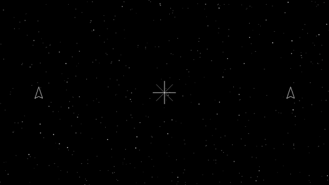
Primitives
Points, lines and triangles through a Begin/End batch, the way SpriteBatch works for sprites.
-
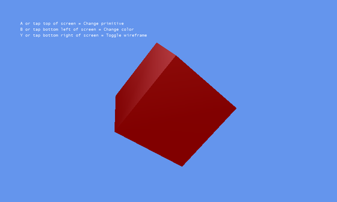
Primitives 3D
Reusable cube, sphere, cylinder, torus and teapot geometry, in solid or wireframe.
-
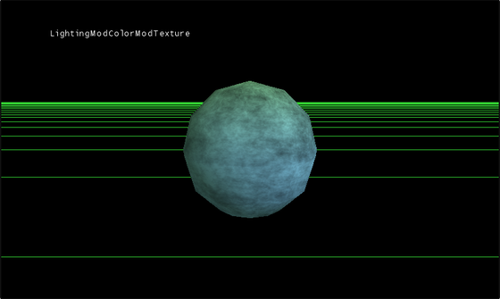
Textures and Colors
Shader Series 2 — combining lighting, vertex colour and texture colour into one pixel.
-
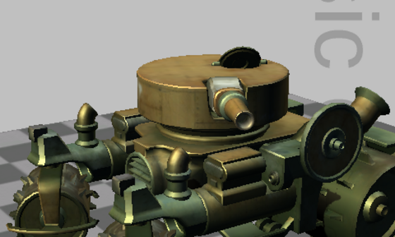
Reach Graphics Demo
Six interactive scenes for XNA's stock effects, models, animation, render targets and SpriteBatch.
-
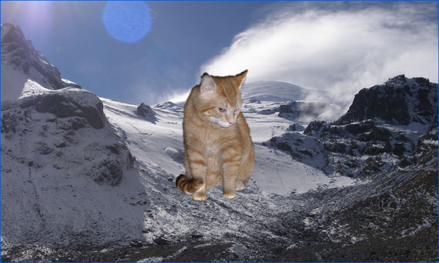
Sprite Effects
Five animated SpriteBatch pixel effects: desaturation, dissolve, refraction and normal-mapped lighting.
-
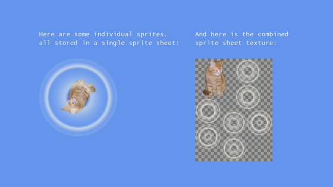
Sprite Sheet
A custom content processor packs a cat and seven glow frames into one texture atlas.
-
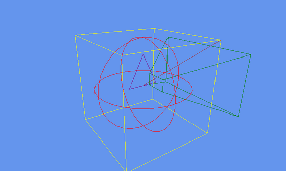
Shape Rendering
Batched debug drawing for lines, triangles, boxes, spheres and viewing frustums.
-
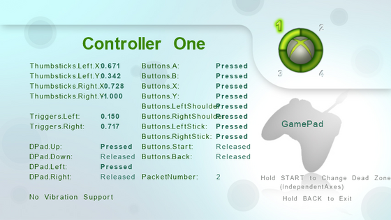
Input Reporter
Live gamepad state, capabilities, controller selection and configurable thumbstick dead zones.
-
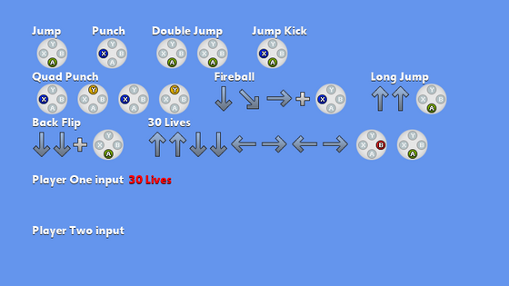
Input Sequence
Buffered keyboard and gamepad input recognition for fighting-game-style moves and combinations.
-
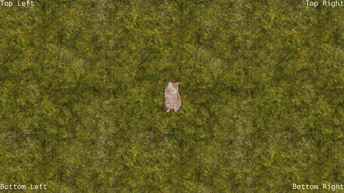
Safe Area
Title-safe screen layout, aligned text and a camera that follows the cat before it reaches the edge.
-
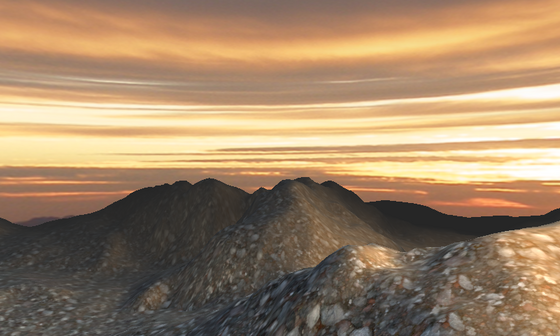
Generated Geometry
Terrain and skydome meshes generated by custom processors in the XNA Content Pipeline.
-
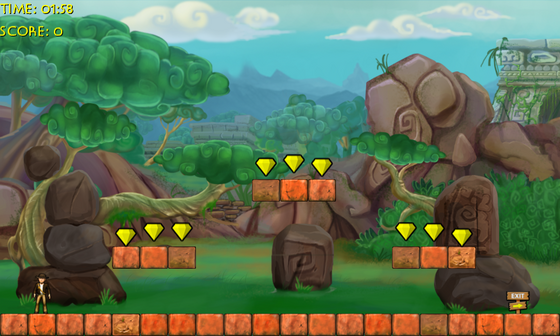
Platformer
A complete three-level platform game with animated sprites, gems, enemies, physics and sound.